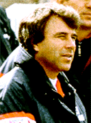

| Когда же мы научимся летать? |
|---|
Очень переживаю за команду Крылья Советов (Самара).
Я начал интересоваться футболом примерно в те годы, когда команда Крылья Советов (Куйбышев) вылетела из высшей лиги. Последнее место прочно и бесповоротно занимал ташкентский Пахтакор, игравший вне конкурса. Вроде бы основной состав узбекской команды разбился в авиакатастрофе, и футбольное руководство СССР решило оставить эту команду в высшей лиге в любом случае. Таким образом, вылетали не две последние, а две "предпоследние" команды. Одной из них оказались Крылья Советов.
Я неоднократно слышал мнения, что если бы Пахтакор не разбился, он бы точно вылетел в том году в первую лигу, а Крылья бы остались. Не знаю... Крылья как раз своей игрой тогда продемонстрировали, что заняли свое "законное" место. Потому что в первой лиге они тоже не удержались и без остановок проследовали во вторую, где и завязли в середине турнирной таблицы.
Произошло то, что называется "полный абзац". От команды отвернулся город, почти все болельщики, ушли тренеры, разбежались игроки. И только мамонтообразный
бегал в толпе пацанов от штрафной до штрафной, демонстрируя в отличие от них хоть какое-никакое умение иногда попадать по мячу.
И были долгие годы барахтанья в вязком болоте второй лиги. Пару раз с неимоверным напряжением выходили в первую... и неизбежно скатывались назад. Запомнилось ощущение какой-то глухой безнадеги и бесперспективности любых усилий.
Крылья были равными в бесконечных рядах абсолютно безликих и серых команд. Очки давались с трудом, а иногда и просто покупались.
Помню один матч 1-й лиги примерно в 1988 году, кажется с Ростсельмашем... или с Текстильщиком? 85 минут вялого катания мяча по полю со стороны обеих команд. Неопасный штрафной в сторону ворот гостей, до ворот метров 25. Рова Валиев разбегается, по дуге посылает мяч в сторону противника и, не интересуясь результом удара, трусцой бежит к свои воротам. А мяч... а мяч пролетает мимо ковыряющего в носу вратаря и оказывается в сетке. Восторг на трибунах и шок на поле: мы не хотели... это случайно...
Дальше началось вообще стыдоба. Наша защита старательно расступалась перед игроками соперника, чуть ли не пасовали им в ноги - на, забивай! Тщетно. Разнежившиеся за 85 минут форварды гостей ну никак не могли попасть в пустые ворота, а когда попадали в рамку - мяч обязательно задевал за ногу изо всех сил уворачивающегося вратаря. За 5 минут Крыльям могли закатить по крайней мере 5 голов. Но получился только один, на последней минуте. И игроки обеих команд с чистой совестью поздравили друг друга с добытым в тяжелой борьбе заранее договоренным результатом.
Мне кажется, именно в эти годы Крылья приобрели традиции ни на что не претендующей команды второго сорта. И до сих пор они гирями висят на ногах наших футболистов и тренеров.
Игровую судьбу любой (и особенно провинциальной) команды определяют прежде всего традиции, а не только деньги.
Вспомните Асмарал - команду без традиций вообще. Надолго ли ей хватило забугорных бабок?
И посмотрите на Ростсельмаш или Ротор. У этих команд могут быть хорошие или плохие финансовые условия. Они могут даже временно вылететь в низшую лигу, когда от безденежья разбегутся игроки и тренеры. Но они обязательно вскоре вернутся на свое "законное" место.
Все дело в традициях.
Традиции - это:
когда за команду переживает весь город, и в случае финансовых затруднений рано или поздно находятся необходимые средства (например, спонсорские);
когда в команде годами и десятилетиями играют и работают одни и те же люди-единомышленники, олицетворяющие "корневую систему" команды;
когда команда годами и десятилетиями проповедует общий стиль и рисунок игры вне зависимости от текущего состава игроков;
когда в команду приглашаются не абы кто, а игроки и тренеры, соответствующие определенной игровой концепции;
когда футбольное поле не напоминает картофелеразработки;
когда доморощенный футбольный телекомментатор умеет хотя бы разговаривать на русском языке;
когда результат очередной игры команды сообщают в местных средствах массовой информации хотя бы на следующий день, а не через неделю;
когда местный журналист, освещающий игру команды, делает это аккуратно и объективно, а не в стиле "мы были rulez, соперник был suxx, поэтому мы случайно проиграли 0-3"...
Положа руку на сердце, ответьте себе честно на вопросы:
как насчет традиций в команде Крылья Советов (Самара)?
на что может рассчитывать команда в ближайшие годы?
Я задал себе эти вопросы и сам же ответил:
традиции есть, но хреновые;
на прозябание в хвосте турнирной таблицы высшей лиги или на вылет в первую с перспективой завязнуть там на многие годы в хвосте "почетной" первой шестерки примерно равных по силам команд.
Но слава Богу, традиции поддаются "облагораживанию". И именно в этом направлении у самарской команды может быть хоть какая-нибудь перспектива на будущее.
Я никоим образом не связываю эти перспективы, например, с изменением названия команды. Крылья Советов - это имя, данное команде при рождении. Пусть давно нет Советов, но это не повод, чтобы становиться каким-нибудь самарским ВторЧерМетТяжМашСнабСбытБред-ом, пусть даже означенный Втор...(тьфу!)- очень богатый спонсор. А спонсоры пусть увековечивают себя на майках игроков... или на лбу, если очень хочется.
Я никоим образом не связываю эти перспективы с глобальным перетряхиванием состава. В межсезонье 98-99 защита, собранная ранее Аверьяновым, очень понравилась Тарханову, и он оставил игроков. В сезоне-99 эти защитные линии были самым слабым звеном. В игроках ли дело, и стоило ли их разгонять? И кто лучше - коренной самарский грузин Циклаури или толпа каких-нибудь гостей из Закавказья, отчисляемых после пары-тройки матчей?
Я никоим образом не связываю эти перспективы с приглашением крутых тренеров. Команде нужен тренер-хозяин, тренер-прораб, а не тренер-профессор. Аверьянов мог стать таким... но ему предпочли Тарханова.
|  |
Я любила генерала, А потом политрука, Выше, выше поднимала... И дошла до пастуха! (c) Народ |
Может быть, Тарханов и гений тренерского процесса. Вот пускай и работал бы вторым тренером - отрабатывал стандартные положения, ставил игрокам удар, налаживал игру в пас... А вот умения собирать из игроков команды он пока не продемонстрировал.
Нет команды. Нет игры. А если иногда и случаются красивые победы... гм... что лучше - два раза выиграть 3-0 или пять раз не проиграть с таким же счетом?
Но все-таки дело не только, и не столько в Тарханове.
Я не Господь Бог, чтобы мысленным повелением разрешить проблему, и не Доктор Айболит, чтобы давать рецепты. Но по крайней мере видны основные направления - как и что надо менять. Это - необходимые условия. Если их не выполнить, никакие жуткие бабки, супертренеры и сверхигроки не сделают из Крыльев просто хорошую команду.
Чтобы летать под облаками, надо сначала научиться отрываться от земли. Как вы думаете - шансы есть?
| Дополнение - 2003 |
|---|
И вот, наконец, эпоха Тарханова кончилась. Пожалуй, это было неплохое время. Главное, появилась игра. Появились фрагменты инфраструктуры. Появились зачатки традиций. Но все-таки, как я и ожидал 5 лет назад, и как считаю до сих пор, Тарханов - столичный "прохвессор". Которому интересно поэкспериментировать, изобрести что-то новое, усовершенствовать что-то старое, который все про все теоретически знает, но... не умеет в решающий момент довести свою работу до логического конца, до желаемого результата. Да и не жалеет об этом.
Впрочем, а нужен ли нам был такой скоропостижный результат? Готовы ли мы были к нему? Не уверен. Я сначала полюбуюсь на турнирную судьбу выскочки-Рубина в чемпионате-2004, позабавлюсь его барахтаньем в КУЕФА, а уж потом смогу ответить на этот вопрос однозначно.
Теперь, что ждать от Гаджиева. Честно говоря, не знаю. Очень тревожно за судьбу КС в ближайшие года два.
|
Ты странный гость в моей судьбе. Что общего быть cможет между нами? Придется ль мне заплакать о тебе, Когда исчезнешь вновь в ночном тумане? (c) Я. |
Во-первых, меня еще ничто и никто не убедил, что Гаджиев - действительно хороший профессионал: в истории немало примеров тому, как некие тренеры в строго определенные моменты времени, со строго определенной командой, при сторого определенных условиях прыгали много выше своей головы, а потом всю оставшуюся жизнь пытались достичь хотя бы 50% своего былого успеха. Во-вторых, Гаджи Муслимович - не очень молодой и не слишком здоровый человек, и это может очень негативно (даже фатально) сказаться как на его тренерской карьере, так и на судьбе КС. Наконец, Гаджиеву с КС может просто не повезти: в последние пару лет очень сильно вырос средний уровень чемпионата РФ, и несколько абсолютно равных по классу команд могут вполне закономерно оказаться в итоговой таблице на разных полюсах.
Короче, пока я ожидаю от Гаджиева, чтобы он хотя бы повторил лучшие результаты Тарханова, хотя бы научился держать КС в шестерке лучших. А после будем посмотреть...
| Дополнение - 2007 |
|---|
Честное слово, скажи мне 3-4 года назад, что я так буду горевать по Гаджиеву, не поверил бы. Но это истинная правда: горюю.
Смешно, но я вижу в "Крыльях" 2000-2006 годов этакую Золушку. Пришла Добрая Фея, подарила платье в брильянтах, хрустальные туфельки, роскошную карету с тройкой вороных жеребцов и приоткрыла дверцу на бал. А потом выяснилось, что все это пшик, мираж, "оптический обман зДрения". Что Ткаченко, тварь такая, наделал долгов и бросил команду. Что Гаджиев, мерзавец такой, налево и направо покупал и продавал матчи. Журналюги-трупоеды доказательств-то не предоставили, но описывают обстоятельства дьявольски убедительно. И вот уже все это стало почти фактами. И Добрая Фея оказалась старой прошмандовкой, и хрустальные башмачки-то сперла она в геолого-минералогическом музее, и вообще, меняй-ка, Золушка, свое вечернее платье на картофельный мешок с дырками для рук и головы, верни-ка хрустальные башмачки на законное место, походишь босиком, и вынеси-ка, дармоедка, ведро с помоями.
Но ведь бронза БЫЛА! Это ведь не сказка, не мираж, не голография !!!
Но что-то мне подсказывает, что очередного успеха Крыльям ждать еще лет 40. Может, Оборин и хороший тренер. Но одно дело - методом проб и ошибок в течение 10-15 лет собирать потихоньку свою команду, а другое дело - направлять игру уже готовой команды. Это разные футбольные профессии. Несть числа примерам, как сначала - на кураже - вроде неплохо получается, потом начинаются пробуксовки, потом происходит резкий обвал, и не хватает ни умения, ни опыта вывести команду из пике. В такой ситуации обычно, разведя руками, уходят, открывая путь другому, третьему, пятому, которые наперебой обещают сотворить чудо, но только еще глуюже загоняют команду в трясину... И вот уже Первая Лига щербато ухмыляется и дышит перегаром в лицо команде и ее болельщикам...
Вот чего я боюсь. И очень рад буду ошибиться.